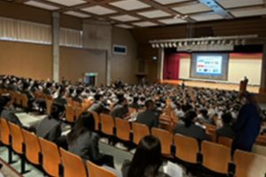
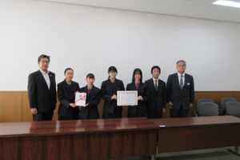

地域活動
-

出前授業（豊川高校）
-
キッズ・マネースクール
-

フードバンクへ寄贈
-

献血
-

しんきんサミット
-

能登復興「食べて応援」
-
出前授業（豊川高校）
-
キッズ・マネースクール
-
フードバンクへ寄贈
-
献血
-
しんきんサミット
-
能登復興「食べて応援」
業務内容
渉外業務
地域の企業、ご家庭を訪問する営業の仕事です。 「足」を活かしたFace to Faceで、信用金庫の主役です。 お客様のニーズを捉え、預金・融資・金融商品などの提案を行います。
預金業務
窓口（テラー）業務・後方事務は、お金の入出金や振込など預金に関する業務全般を担当します。 「笑顔」を活かしたFace to Faceで、お客さまのおもてなしをします。 様々なライフステージのお客様との関係を深め預金・融資・金融商品などの提案を行います。
融資業務
お客さまからの融資のご相談、お申込みなど一連の融資業務に携わります。 財務分析・改善、事業承継など「未来を見据えた」Face to Faceで融資提案業などを行います。 他の業務担当と連携、情報共有し、お客さまの立場で考えたコンサルティング業務などを行います。
働き方
先輩社員の声
私は地元の企業や個人のお客様と直接関わる中で、地域経済を支えている実感を得ています。お客様からの「ありがとう」の言葉が何よりのやりがいです。 日々の業務を通じて信頼関係を築きながら、自分自身も成長できる環境があります。
地域支援部 Aさん
入社当初は金融の知識がほとんどありませんでしたが、先輩や上司が丁寧に指導してくださり、安心して成長できました。 社内研修や資格取得のサポートも充実しており、意欲次第でどんどんスキルアップできます。アットホームな雰囲気の中で、のびのびと働けるのが当金庫の魅力です。
融資部 Bさん
かわしんのデータ
| 設立年 |
|---|

1937年 |
| 店舗数 |
|---|

36店舗 |
| 役職員数 |
|---|

549名 |
| 平均勤続年数 |
|---|
|
15.2年 |
| 月平均残業時間 |
|---|

3時間 |
| 平均有給休暇取得日数 |
|---|

12日 |
| 新卒採用者の定着率 |
|---|
|
92.3% |
| 育児休業取得率 |
|---|

100% |
| 管理職の女性割合 |
|---|
|
10.0% |
採用情報
募集要項
| 採用学科 | 全学部全学科 |
|---|---|
| 採用人数 | 大学卒、短大卒 （未定） |
| 採用職種 | プール職 |
待遇と勤務
| 初任給 |
大学卒：220,000円 短大卒：190,000円 |
|---|---|
| 諸手当 | 通勤手当、渉外手当、資格取得手当、他 |
| 昇給 | 年1回（4月） |
| 賞与 | 年3回（6月・12月・3月）※3月は、職種および業績により支給 |
| 勤務地 | 愛知県内（豊川市・豊橋市・蒲郡市・新城市・田原市・岡崎市・北設楽郡東栄町・額田郡幸田町） |
| 勤務時間 | 8:45～17:30 |
| 休日休暇 | 土曜、日曜、祝日、12月31日～1月3日、年次有給休暇、慶弔休暇、誕生日休暇、介護休暇、ボランティア休暇、他 |
| 教育制度 | 新入職員研修会、階層別研修会、職能別研修会、自己啓発支援制度、他 |
| 福利厚生 | 各種社会保険、職員融資制度、提携保養所エクシブ、 奨学金返済資金支援制度、早期資格取得制度、 旧姓使用制度、通信制大学学費支援制度、他 |
採用フロー |
|---|
| マイナビよりエントリー |
| 会社説明会 |
| 面接（グループ） |
| 適性検査 |
| 筆記試験 |
| 面接（個別） |
| グループディスカッション |
| 内々定 |
マイナビ2026
よくある質問
Q. 採用試験はどのように行われますか？
A. 筆記試験と面接試験を実施します。
金庫概要
| 創業 | 1937年（昭和12年）11月 |
|---|---|
| 本店 | 豊川市末広通3丁目34番地1 |
| 預金 | 8,783億円 |
| 貸出金 | 4,075億円 |
| 出資金 | 1,411百万円 |
| 会員数 | 37,347人 |
| 店舗数 | 36店舗（本店1、支店33、出張所2） |
| 役職員数 | 549名（役員12名、職員537名） |
お知らせ
お問い合わせ
豊川信用金庫 人事部
0120-09-2317
担当：人事部（渡辺、大西）